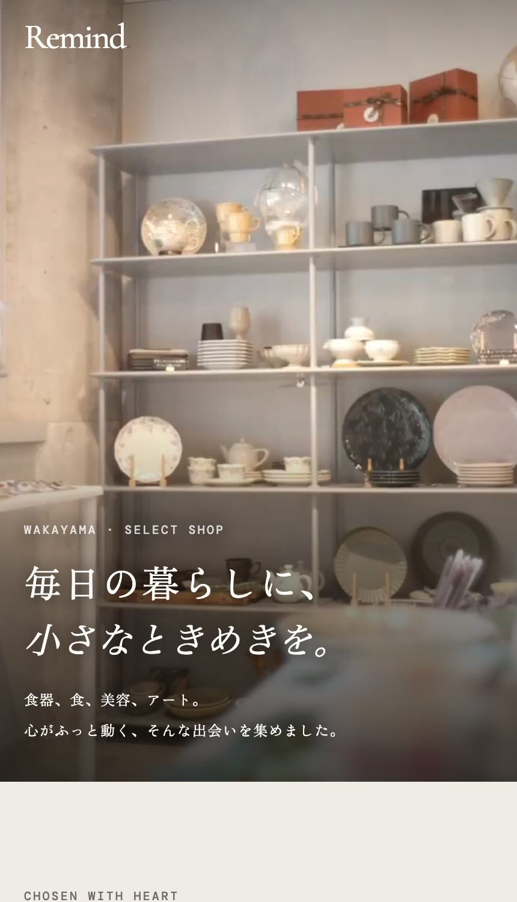
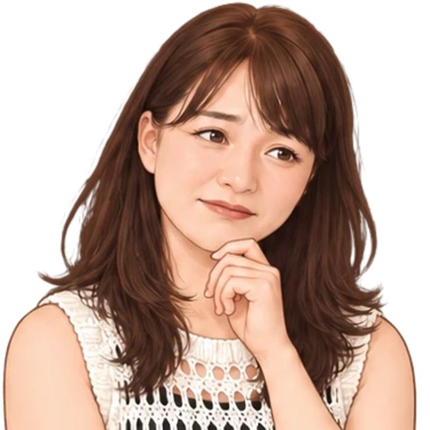
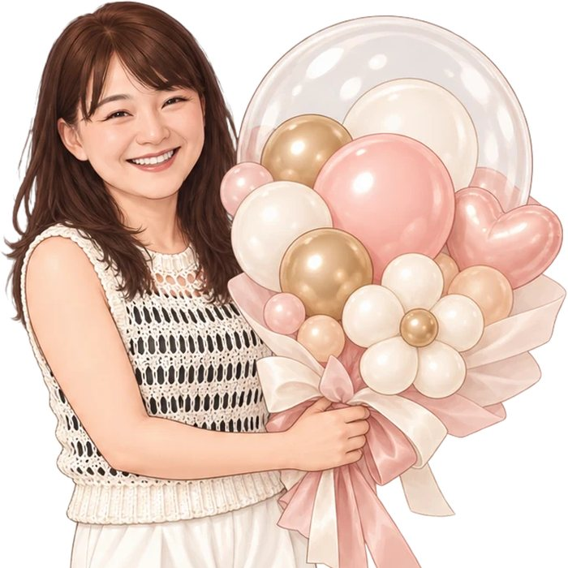
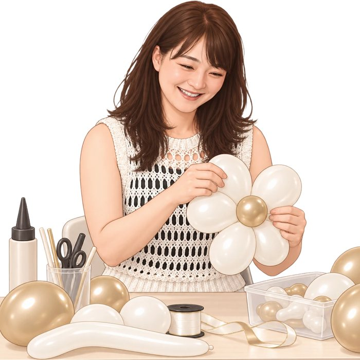
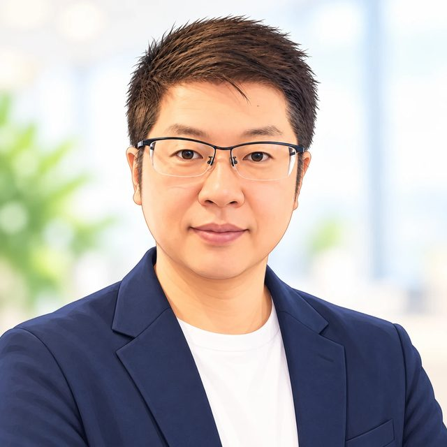
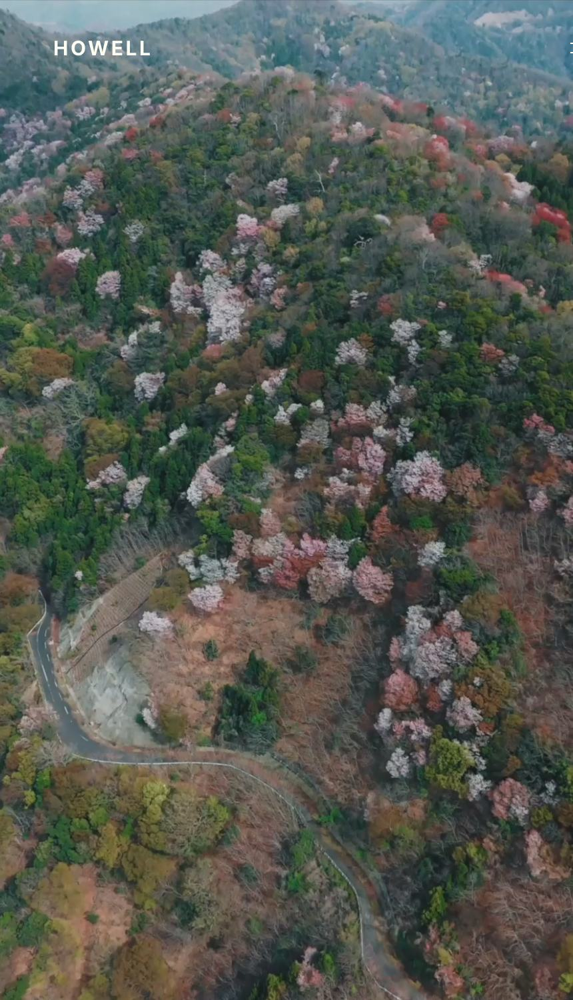
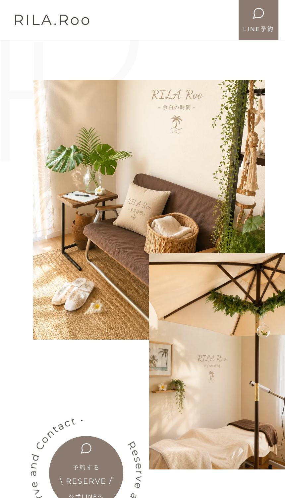
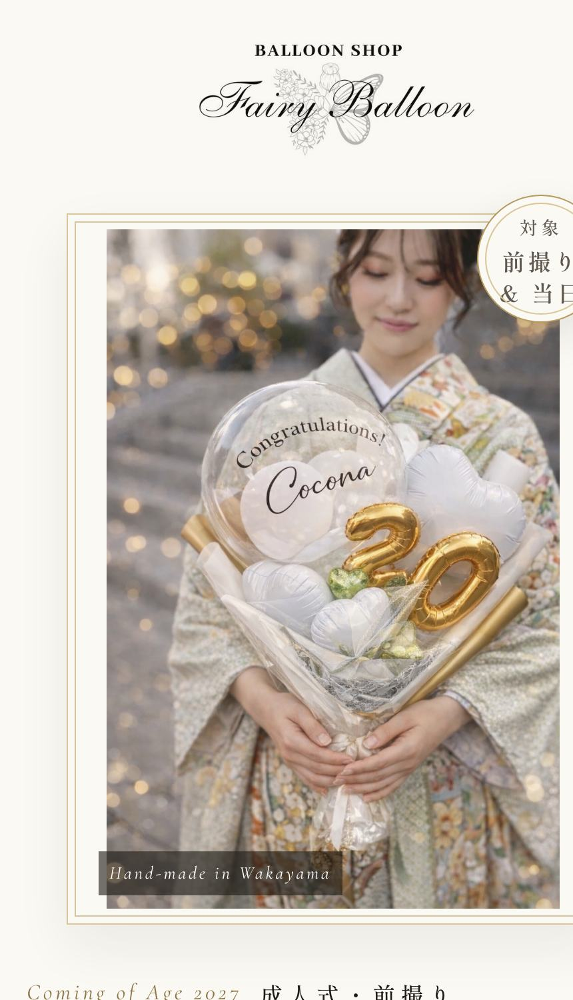
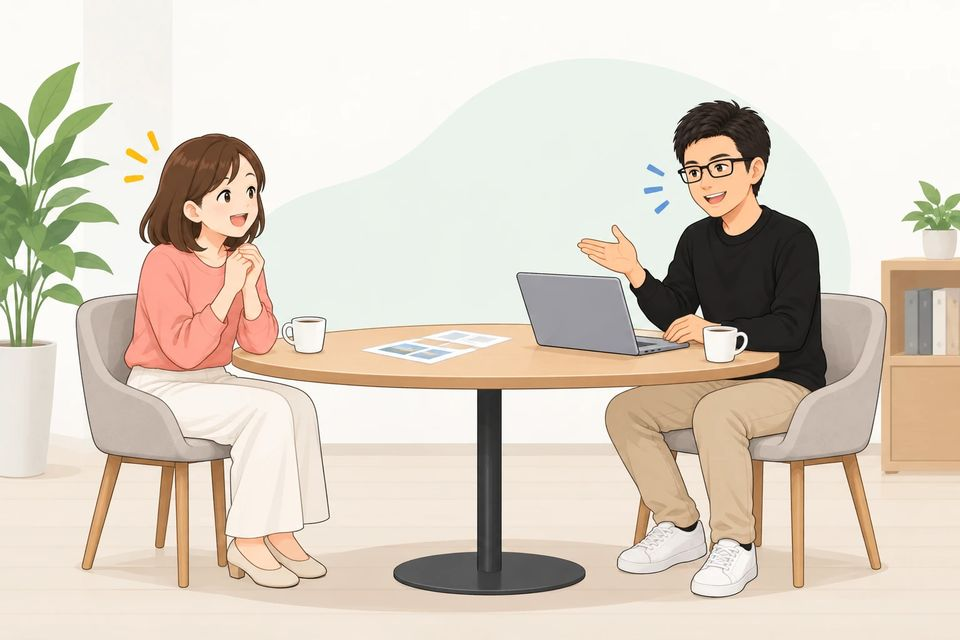
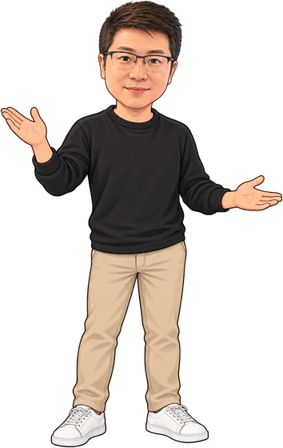

和歌山発・小さなお店のLP(1枚ホームページ)制作 cocolinks ココリンクス
cocolinksは、小さなお店の魅力がひと目で伝わるLPを、お店の話を聴くところから公開までまるごと作るサービスです。 作っているのも、お店の人間です。
制作会社に見積もりを取ったら、何十万て言われてそっと閉じた
インスタは頑張ってる。でも「ちゃんとしたページ」がなくて、プロフィールのリンクが寂しい
昔作ったホームページが放置されて、今のお店と別物になっている
自分でも作れるって聞くけど、そんな時間はない
ぜんぶ、うちの店のことでした。
cocolinksの1店目のお客さんは、妻が自宅アトリエで開いているバルーンショップでした。作り手のひろみに、正直なところを話してもらいます。




平日はメーカーの工場で働く、50歳の会社員。 妻が自宅アトリエで開いている小さなバルーンショップを、夫婦で運営しています。ぼくの担当は集客です。
「いいお店やと思うのに、お客さんが来ない」。
これ、よそのお店の話じゃなくて、うちの店の悩みでした。
集客はインスタ頼み。がんばって投稿しても、なかなか注文にはつながらない。
悔しくて、AIとマーケティングを本気で勉強しました。 店のページ(LP)を自分で作り直して、毎月数字を見ながら改善を続けたら、 インスタだけだった集客に、ページ経由のお問い合わせが加わり始めました。 趣味で始めたYouTubeチャンネルも、コツコツ続けて登録者6万人を超えました。 「ネットで見つけてもらう」のは、才能じゃなくて、やり方なんだと思います。
人に喜んでもらうことが、いちばんの生きがいです。 自分の店で試してきた経験とやり方を、同じ悩みを持つ店主仲間のために使いたくて、この仕事を始めました。




バルーンショップ(自店)
わたしたち自身のお店の、成人式・前撮り向け特設ページ。価格・お客様の声・LINE導線つきです。
fairyballoon.com/seijin/※実績は上記4件です。掲載はいずれも事業者さまと確認のうえ行っています。お客さまのアクセス数などのデータは公開していません。
| 頼み先 | 相場 | 構成・文章の作成 |
|---|---|---|
| 制作会社 | 30〜60万円 | 込み(この価格帯から) |
| フリーランス | 10〜30万円 | 別料金のことが多い |
| cocolinks | 88,000円 | 込み |
※相場は「Web幹事」ほか2026年公開の調査記事をもとにしています。
安い帯の価格で、上の帯の中身を。——からくりは、すぐ下で説明します。
下書きやコーディングはAIで一気に圧縮。そのぶん人間は、お店の話をじっくり聴くことと、仕上げの磨き込みに時間を使います。安いのは手を抜くからではなく、道具が新しいからです。
ひとりでやっている副業の事業です。事務所の家賃も、営業マンの人件費も、広告費も、価格に乗っていません。
自分がお店側として「この金額なら頼めるのに」と思ってきた感覚で値付けした、仲間価格です。
昔作ったWordPressのサイトは、使っていなくても保守が必要です。国の機関(IPA)の調査では、サイバー被害を受けた事業者の75%が、こうした更新を放置していたと報告されています。 いまのサイトを、今のお店に合わせて軽い仕組みに作り直す「お引っ越し」のご相談も、同じ88,000円で承ります。
構成も、文章も、デザインも、公開作業も、ぜんぶ込み。月額の縛りなし。
この価格は、cocolinksを始めたばかりの「今の価格」です。実績が増えたら見直す予定ですが、値上げのときは事前にお知らせし、ご契約済みの方には影響しません。
cocolinksは2026年に始めたばかりの小さな事業です。最初の5店さまは、制作実績としての掲載・アクセス数の公開・ひとことの感想にご協力いただく代わりに、66,000円でお作りします。中身と仕上がりは88,000円とまったく同じ。正直、かなり思い切った価格です。6店目からは88,000円で、モニター枠の残りはLINEで正直にお答えします。
①から②への引っ越しは、あとからでもOKです(設定料11,000円+ドメイン実費/育てるプラン加入中は設定料0円。URLが変わる旨は事前にご説明します)。
「作ったあと」を、まるごとお任せ。
プランに入らない方向け。営業時間・メニューの変更など、「直したいのに頼めない」をなくします。
お店の雰囲気が伝わる十数秒の動画を、ページ冒頭に。撮影は和歌山の映像クリエイターHOWELL、窓口と進行はcocolinksが一括でお受けします(LP88,000円+映像110,000円)。動画だけのご依頼は121,000円(税込)。
cocolinks.com/お店の名前/ から、www.お店の名前.com へ。ドメイン取得のお手伝い・設定・旧URLからの転送・LINEやインスタのリンク差し替えのご案内まで。
お店の名前と、いま困っていることを一言だけで大丈夫。いまのネットでの見え方を、店主目線で一緒に確認します。
お店のこだわり・お客さんに伝えたいことをじっくり伺います。むずかしい準備は要りません。

構成・文章・デザインを作って、ご確認いただきながら仕上げます。最短1週間で公開できます。
公開作業までこちらで行います。公開後は、単発修正(1回3,300円)か、育てるプラン(月5,500円)で数字を見ながら育てていけます。
「まだ頼むか決めてない」「うちの店でもできる?」——その段階で大丈夫です。 店主同士、気軽にどうぞ。

LLINEで相談する(無料)